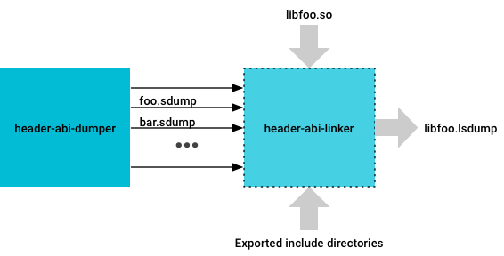
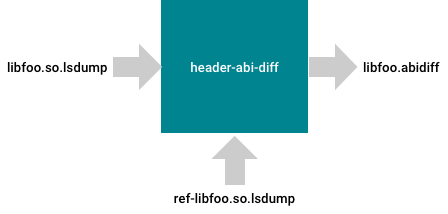

header-abi-dumper processes the source files compiled to
build the VNDK library (the library's own source files as well as source files
inherited through static transitive dependencies), to produce
.sdump files that correspond to each source.

.sdump
filesheader-abi-linker then processes the .sdump
files (using either a version script provided to it or the .so
file corresponding to the shared library) to produce a .lsdump
file that logs all of the ABI information corresponding to the shared library.

.lsdump
fileheader-abi-diff compares the .lsdump
file with a reference .lsdump file to produce a diff report
that outlines the differences in the ABIs of the two libraries.
